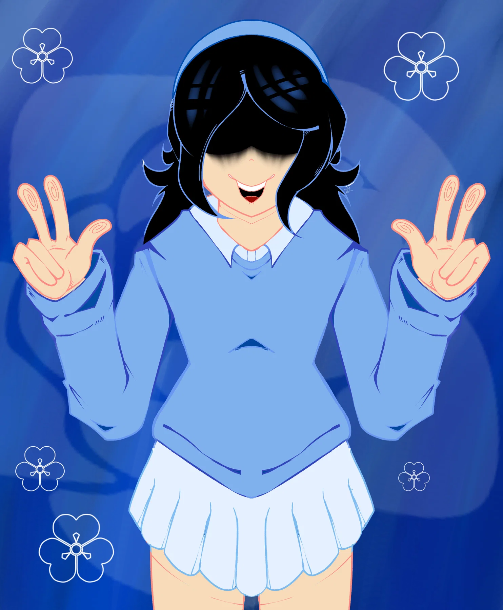
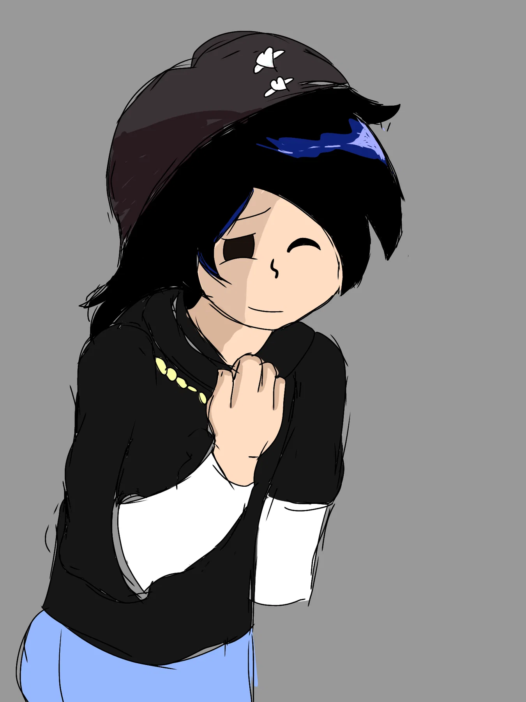
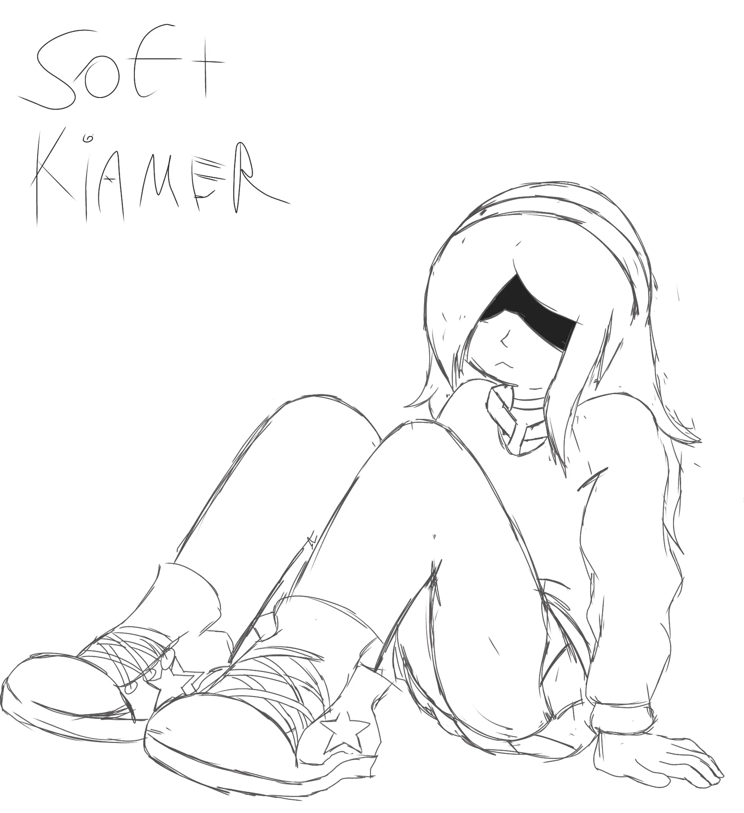
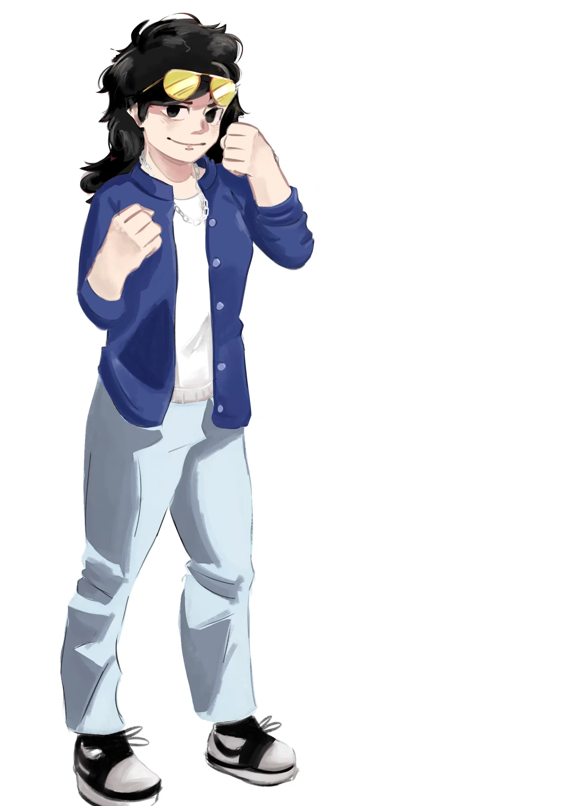

Soft Kamer
Boceto central · 1:00 · crédito musical no indicado.
Una interpretación temprana y poco desarrollada. La identidad visual se conserva en azul, negro y blanco con pequeños reflejos dorados.

Boceto central · 1:00 · crédito musical no indicado.

Concepto con dos versiones conservadas.
La nota original afirma que solo hubo dos conceptos, pero el ZIP contiene más audios. Se muestran como bocetos auxiliares sin asignarles una función inventada.

Boceto corto · 0:49 · sin portada entregada.

Concept art conservado como cierre silencioso del archivo.